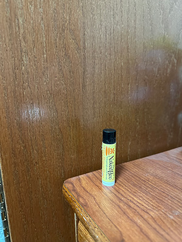
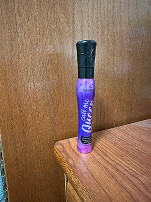
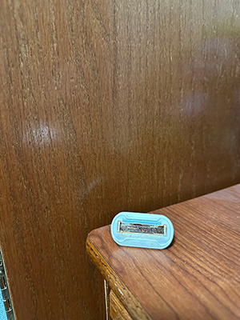
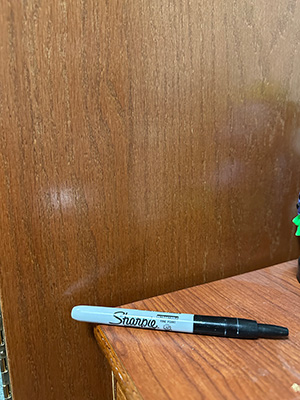
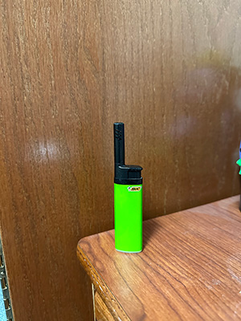
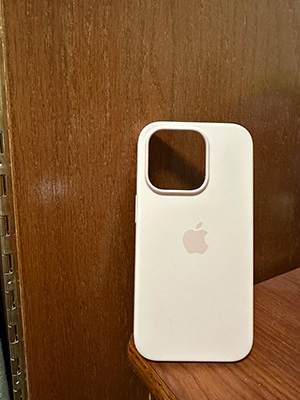

Week 05: The Last Spark
Why I am Sharing my Trash with You
When most people throw out their trash, it is often without a second thought or glance. However, I believe that by documenting my trash I can be more conscious about what I am getting rid of. This can help me from being wasteful and contributing towards environmental issues. In addition, I can identify patterns from my trash. If there are a lot of half used items, I can be sure not to buy them again and prevent wasting them.
In addition, you can tell a lot about people based on their trash. It may seem silly, but I am providing my audience with a glimpse into who I am as a person. Even as I am typing this behind a screen, knowing my readers will never truly get to know who I am. Yet, I know that there are certain details that they will be able to gather, like I am a young adult girl who wears contacts for example.
Lastly, by documenting my trash, I have a log that I can look back on in the future to reflect on what was popular during this time. In a way, it is a lot like a diary in those years from now. I can go back to my website and show my kids “this was the type of mascara that was popular when I was your age” or “this skincare product worked wonders back in the day”.
A lot of my work was inspired by the following people. If you are interested in my project, make sure to check them out as well!
Weekly Overview
This week’s trash had a pattern that I picked up on. For example, of the nine objects I documented this week, six of them were related to beauty/personal hygiene. These objects included a mascara bottle, an old razor, an old chapstick, a face spray, an old contact container, and a thing of floss. This really sheds light on products that I use a lot and the emphasis that I place in my life on taking care of myself. I also noticed that eight out of the nine objects were items that I had used up/had gone bad. This signaled to me that I am doing a good job of not throwing away items just for the sake of it. Rather, I am using the items up to their potential. I decided to divide the items for this week into three categories: eyes & mouth, skin goals, and not pretty, just necessary.
Eyes & Mouth
This first grouping of items involves items that hold things that go in or on the eyes and mouth. These objects involve the contact blister packet, the floss container, the chapstick, and the mascara bottle. The contact blister packet is a small, light blue container that has my contact prescription information on it. I received this item a few months ago along with a full year’s worth supply. One memorable experience I had with this item was when I went to put in my new contact, not realizing that I hadn’t taken out my old one. The reason I am discarding this item is because I used the contact inside of it and no longer need the packaging. The second item is the floss container which I got from the dentist when I went for my bi-annual checkup in September and is a small, blue box. I remember one time I used floss in place of thread since I didn’t have anything to tie something together. I am throwing out the container because much like the contact blister packet, I have used all the floss inside and no longer need the container. The chapstick has a black top and a yellow bottom with the brand “The Naked Bee” on it. I got the chapstick a few years ago as a stocking stuffer and it has served me well until it ran out recently. A funny memory I have was when I got sick with a sinus infection, I kept putting it all around my lips and under my nose because it helped clear my sinuses. I am getting rid of it since it has reached its end. The last item in this group is the mascara bottle. It is a purple bottle with a black top. The mascara itself is the deepest shade of black. I bought it a few months ago in a desperate search for a good mascara. It has since grown old and got clumpy which is why I am throwing it away. However, while it was still good, I still remember all the compliments I got on my lashes.
Skin Goals
The second group of items contains items that I use on my skin. These are the razor head and the “Magic Molecule” skin spray. The razor head is a white plastic piece that goes on the end or a razor handle, and it has a few metal bars which are what cuts the hair. I got it a few weeks ago and funnily enough, I remember placing it down in the shower one time and I couldn’t find it for the life of me only to realize that I had put it in one of my exfoliating gloves. I am getting rid of the head because it has gotten rusty from being exposed to the water for so long and I don’t want to risk tetanus. The second item is the “Magic Molecule” spray which I got a few months ago since it is known for helping with red skin, itchy skin, or really any issues with your skin. It is a white bottle with a blue cap. I remember I had a bad pimple, and it cleared up overnight from using the spray. I am getting rid of the bottle since it is now empty having saved my skin.
Not Pretty, Just Necessary
The last group of items are what I deem “Not Pretty, Just Necessary" meaning they don’t help me look or feel better but are essential. These include the Sharpie, the lighter lighter, and the phone case. The Sharpie was part of my back-to-school shopping spree when I started college four years ago and has a black click top and a gray body. It has helped me with a lot of different projects and for organizing my notes. One time, I spent 2 hours highlighting information in Sharpie, and the marker didn't falter at all. I am getting rid of it since it is now worn out and dry. The lighter I got about a year ago has a black top with a lime green body. It has lit a lot of candles that help make my room the perfect study haven. My favorite scent is "Pink Sands", and the lighter has lit that candle every time. Unfortunately, it has been all used up and will not light anymore. The last item is the phone case which is light pink and silicone for an iPhone 14 Pro. I got it a few months ago and one funny memory I have is going through TSA and it got stuck in my pocket as I scrambled to get it out embarrassed. It is for that exact reason (impossible to get out of your pocket), that I am getting rid of it.
Gallery of Trash

Contact Blister Packet

Floss Container
Chapstick
Mascara
Razor Head

Face Spray
Sharpie
Lighter
Phone Case
Coda: That’s a Wrap for the Week
This week was very insightful into my prioritization on health and beauty. Thank you all for joining in to learn more about me and my trash habits. I can’t wait to see what other patterns I will find next week. Stay tuned to see what is in store!